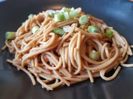

PEANUT BUTTER NOODLES

Description
These peanut butter noodles are kid-friendly and full of bright flavors.b
You can also make this recipe with spaghetti pasta.
Ingredients
- 8 ounces Udon noodles
- ½ cup chicken broth
- 3 tablespoons soy sauce
- 3 tablespoons peanut butter
- 1½ tablespoons minced fresh ginger root
- 1½ tablespoons honey
- 3 cloves garlic, minced
- 2 teaspoons hot chile paste (Optional)
- ¼ cup chopped green onions
- ¼ cup chopped peanuts
Steps
- Bring a large pot of lightly salted water to a boil. Cook udon in boiling water,
stirring occasionally, until noodles are tender yet firm to the bite, 10 to 12 minutes. Drain.
- Meanwhile, combine chicken broth, soy sauce, peanut butter, ginger, honey, garlic, and chili paste in a medium saucepan.
Cook and stir over medium heat until peanut butter melts and sauce is heated through.
- Add drained noodles to peanut butter sauce; toss to coat. Garnish with green onions and peanuts.